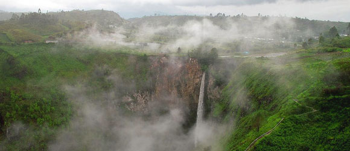
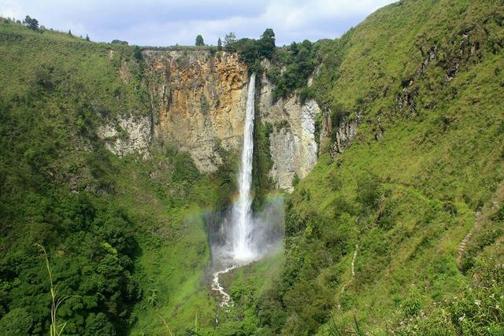
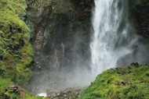

Air Terjun Sipiso-piso merupakan salah satu tempat wisata di Pulau Sumatera. Berada di Kabupaten Karo, Sumatera Utara, yang tidak begitu jauh dari pemukiman penduduk Desa Tongging. Air terjun ini berada di perbukitan dengan ketinggian sekitar 800 mdpl dan dikelilingi oleh hutan pinus. Pengelolaan wisata alam air terjun ini dipegang oleh Pemda Kabupaten Karo. Dengan memiliki ketinggian sekitar 120 meter, Air Terjun Sipiso-piso merupakan salah satu air terjun tertinggi di Indonesia. Dengan adanya air terjun ini, Kabupaten Karo menjadi salah satu tempat wisata yang paling diminati oleh para wisatawan domestik dan mancanegara.

Anda akan terkagum-kagum dengan pesona Air Terjun Sipiso-piso, ketika Anda berada di Desa Tongging, tempat di mana air terjun ini berada.
Sebelum Anda melihat air terjun ini dari dekat, berkunjunglah di gardu pandang yang terletak di puncak bukit. Anda akan melihat hamparan keindahan Tanah Karo. Dari gardu pandang ini juga, Anda dapat menikmati keindahan Pulau Samosir, pulau yang berada di tengah Danau Toba.

Setelah Anda puas menikmati pemandangan nan indah dari jauh, Anda dapat melanjutkan perjalanan menelusuri punggungan bukit untuk bercengkerama dengan keindahan Air Terjun Sipiso-piso. Namun, Anda tidak perlu khawatir dalam menelusuri punggungan bukit tersebut, karena sudah disediakan jalur yang berupa anak tangga dan memang disediakan untuk para wisatawan. Perjalanan memakan waktu sekitar 1 jam untuk mencapai dasar air terjun ini. Dalam perjalanan tersebut, jangan lupa untuk mengabadikan momen indah ini dengan berfoto-foto dengan latar belakang Danau Toba.

Sesampainya di dasar air terjun, arahkan pandangan Anda ke bukit-bukit yang ada di sekeliling air terjun. Dengan perpaduan hijaunya pepohonan pinus yang rimbun dan suara gemuruh air terjun, membuat suasana hati dan pikiran Anda terasa damai dan tenteram. Jangan lupa untuk membawa bekal makanan untuk dinikmati bersama keluarga Anda setelah lelah bermain air di Air Terjun Sipiso-piso.
Air Terjun Sipiso-piso berada di Desa Tongging, Kec. Merek, Kab. Karo, Sumatra Utara. Kecamatan Merek terletak kurang lebih 24 km dari Kota Kabanjahe.